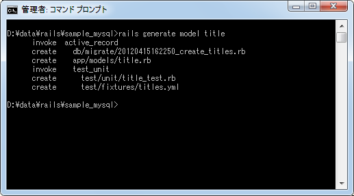
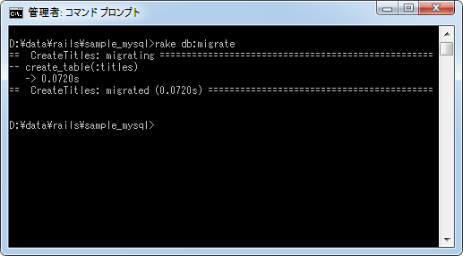
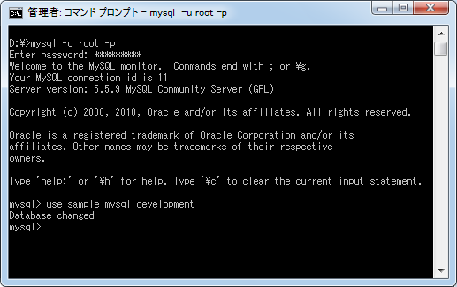
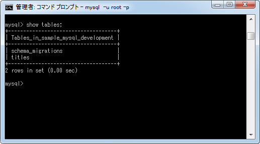
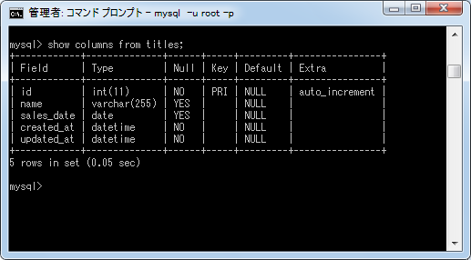
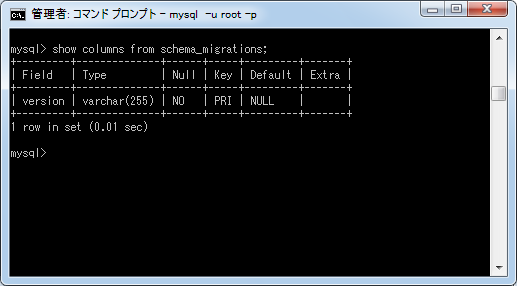
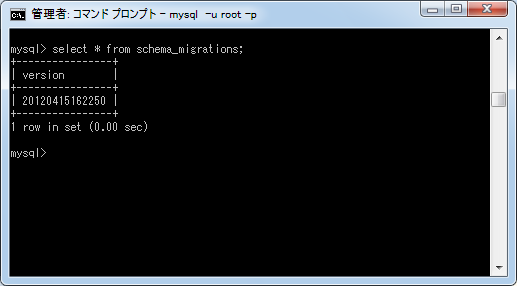
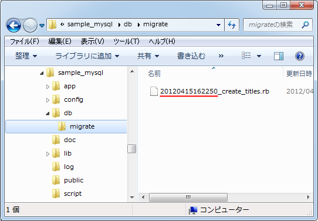
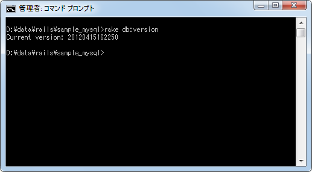

マイグレーションを使ったテーブル作成
マイグレーション機能を使ってテーブルの作成や変更を行なうことができますが、ここではその中でもテーブルの作成方法について解説いたします。
1.テーブル作成のためのマイグレーションスクリプト
2.マイグレーションスクリプトの実行
3.作成されたテーブルとカラムの確認
4.schema_migrationsテーブル
テーブル作成のためのマイグレーションスクリプト
モデルを作成するとモデルに対応するテーブルを作成するためのマイグレーションスクリプトが自動的に作成されます。
ではMySQLを使うアプリケーションでモデルを作成してみます。(作成方法については「モデルの作成とRailsで指定可能なデータ型」をご参照下さい)。

マイグレーションスクリプトファイルが「db/migrate/20120415162250_create_titles.rb」に作成されています。ファイルをテキストエディタで開きます。
class CreateTitles < ActiveRecord::Migration
def change
create_table :titles do |t|
t.timestamps
end
end
end
モデルを作成する時にカラムを指定していないので、デフォルトで作成されるカラムを除いて何も記載されていません。そこでテーブルに含まれるカラムに関する情報をマイグレーションスクリプトの中に記述していきます。書式は次のとおりです。
create_table :titles do |t| t.データ型 :カラム名(, オプション) end
例えばstring型の「name」カラムと、date型の「sales_date」カラムを追加する場合は次のように記述します。
class CreateTitles < ActiveRecord::Migration
def change
create_table :titles do |t|
t.string :name
t.date :sales_date
t.timestamps
end
end
end
オプションというのはカラムに制約を設定する場合に使用します(制約については別のページで解説します)。マイグレーションスクリプトを上記のように修正したあとで保存しておいて下さい。
マイグレーションスクリプトの実行
それではマイグレーションスクリプトを実行します。コマンドプロンプトを起動しアプリケーションルートに移動後、次のように実行して下さい。
rake db:migrate

実行する時、どのマイグレーションスクリプトを実行するのかを指定する必要はありません。まだ実行されていないスクリプトだけが実行されます。
今回のマイグレーションスクリプトではテーブル作成について記載されていましたので、スクリプトの実行によってデータベースの中にテーブルが作成されました。
作成されたテーブルとカラムの確認
ではMySQLにログインし、実際にどのようなテーブルが作成されたのかを確認してみます。

まず作成されたテーブルを確認します。

「titles」と「schema_migrations」という2つのテーブルが作成されていることが分かります。「titles」はマイグレーションスクリプトを実行して作成したテーブルです。また「schema_migrations」はどのマイグレーションスクリプトまで実行済みなのかを記録するためのテーブルです。
では作成した「titles」テーブルのカラム情報を見てみます。

合計5つのカラムが作成されています。まず「name」カラムと「sales_date」カラムはマイグレーションスクリプトで自分で作成するように設定したカラムです。オプションを特に指定していなかったので制約については「NULLの許可」が「YES」となっており「デフォルト値」は設定されていないようです。
次に「id」カラムです。このカラムは何も指定しなくても必ず作成されるカラムでテーブルの主キー(プライマリーキー)となっています。データがテーブルに追加されるたびに自動的に連番の数値が「id」カラムに格納されます。(「id」カラムは自動的に作成されますので、「id」というカラムはご自分で定義しないようにして下さい)。
最後に「created_at」カラムと「updated_at」カラムです。マイグレーションスクリプトの中で「t.timestamps」が記述されている自動的に2つのカラムが作成されるようになっています。「created_at」カラムにはレコードが作成された日時、「update_at」カラムにはレコードが変更された日時が自動的に格納されます。マイグレーションスクリプトが自動で作成されると「t.timestamps」は最初から記述されていますが、必要が無ければ削除して下さい。
このようにマイグレーションスクリプトを実行することで自分で定義したカラムに加えて「id」カラム、そして「t.timestamps」を残してあった場合は「created_at」カラムと「updated_at」カラムが作成されることが分かりました。
schema_migrationsテーブル
続いて「schema_migrations」テーブルのカラム情報を見てみます。

テーブルには「version」カラムが1つだけ含まれています。では現在格納されているデータを取得してみます。

「version」カラムには「20120415162250」という値が格納されています。この値は一番最後に実行されたマイグレーションスクリプトの値で、マイグレーションスクリプトのファイル名の先頭に記載されている値となっています。

「rake db:migrate」と実行した時にこのデータを参照され、現在のバージョンより後のマイグレーションスクリプトを全て実行します。
なお現在のバージョンを確認するには、コマンドプロンプトでアプリケーションのルートに移動後、次のように実行しても確認することができます。
rake db:version

データベースから取得したバージョンの値と一致しています。
( Written by Tatsuo Ikura )

著者 / TATSUO IKURA
初心者～中級者の方を対象としたプログラミング方法や開発環境の構築の解説を行うサイトの運営を行っています。